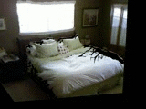
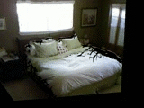

TriDepth: Triangular Patch-based Deep Depth Prediction
The University of Tokyo 1
National Institute of Advanced Industrial Science and Technology (AIST) 2
-
Input image

-
Depthmap

-
Triangular-patch-cloud

-
3D mesh

Abstract
We propose a novel and efficient representation for single-view depth estimation using Convolutional Neural Networks (CNNs). Point-cloud is generally used for CNN-based 3D scene reconstruction; however it has some drawbacks: (1) it is redundant as a representation for planar surfaces, and (2) no spatial relationships between points are available (e.g, texture and surface). As a more efficient representation, we introduce a triangular-patch-cloud, which represents the surface of the 3D structure using a set of triangular patches, and propose a CNN framework for its 3D structure estimation. In our framework, we create it by separating all the faces in a 2D mesh, which are determined adaptively from the input image, and estimate depths and normals of all the faces. Using a common RGBD-dataset, we show that our representation has a better or comparable performance than the existing point-cloud-based methods, although it has much less parameters.


 
